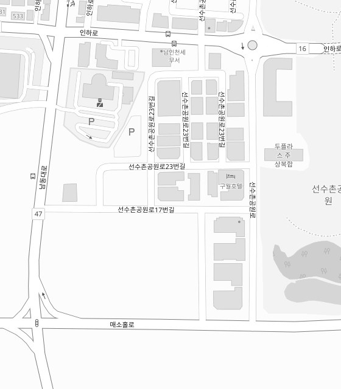

함채헌 공방 기반의
완벽한 착용감
손가락의 굴곡과 생활 습관까지 고려한 1:1 오더메이드. 공방 장인이 직접 다듬어 오래 착용해도 편안합니다.
01 — ABOUT JEWDE
쥬드(JEWDE)는 보석과 꿈꾸는 자의 마음을 합쳐 1989년 청담에서 태어난 이름입니다.
결혼을 앞둔 두 사람의 가장 빛나는 순간에, 평생 간직할 반지를 조용하고 정갈하게 건네고자 했던 마음이 지금까지 이어지고 있습니다. 쥬드주얼리 인천점은 그 기준을 인천 구월동에서 그대로 지킵니다.
02 — ATELIER HAMCHAEHUN
한 쌍의 반지가 완성되기까지,
손끝의 시간이 쌓입니다.
함채헌은 쥬드주얼리가 직접 운영하는 자체 공방입니다. 30년 이상 경력의 공방 장인이 금을 다루고, 돌을 물리고, 마지막 한 번의 광을 올립니다.
기계가 찍어내는 대량생산이 아닌 수작업 커스터마이징. 금속의 색상과 밴드의 폭, 표면 마감, 스톤 세팅까지 두 사람의 손과 취향에 맞추어 1:1로 완성합니다. 인천점에서도 본사와 동일한 함채헌의 공정과 철학을 그대로 경험하실 수 있습니다.
화이트·로즈·옐로우 골드, 플래티넘까지 피부톤과 취향에 맞게.
손가락의 굴곡과 일상의 착용감을 고려한 폭·두께 설계.
매트·폴리시·헤어라인 등 손끝에 닿는 질감까지 선택.
센터 스톤의 크기와 배열, 세팅 방식까지 1:1로 조율.
30년 이상 경력의 공방 장인이 직접 만듭니다.
03 — THE INCHEON PROMISE
손가락의 굴곡과 생활 습관까지 고려한 1:1 오더메이드. 공방 장인이 직접 다듬어 오래 착용해도 편안합니다.
사이즈 조정, 폴리싱, 스톤 점검까지. 쥬드주얼리 인천점에서 구매하신 제품은 평생 책임집니다.
웨딩 촬영 당일, 쥬드 인천점의 프리미엄 소품으로 더 완성도 있는 사진을 남기실 수 있습니다.
예약제 프라이빗 상담으로 충분한 시간을 드립니다. 견적과 제작 과정을 투명하게 안내합니다.
04 — CONTACT & CHANNEL
상담 예약부터 신제품 소식까지, 가장 편한 채널로 만나보세요.
바로 통화가 필요하시면 010-8495-4596 또는 032-441-1236
네이버 플레이스에서 보기05 — FAQ
네, 예약 없이 방문 상담도 가능합니다. 다만 1:1 맞춤 상담과 시착을 여유롭게 진행하기 위해 네이버 예약을 권해 드립니다. 주말에는 예약 손님을 우선 안내하므로, 예약 후 방문하시면 대기 없이 상담받으실 수 있습니다.
네. 두용프라자 건물 지하주차장을 무료로 이용하실 수 있습니다. 매장에 차량번호를 알려 주시면 주차 등록을 도와드립니다.
디자인과 사이즈를 확정한 뒤 함채헌 공방에서 한 쌍을 직접 제작하므로 제작 기간이 필요합니다. 디자인과 공방 일정에 따라 달라지며, 예식일이 정해져 있다면 최소 2~3개월 전에 상담받으시길 권해 드립니다. 정확한 일정은 상담 시 확정해 드립니다.
네. 쥬드주얼리 인천점에서 구매하신 제품은 평생 무상 A/S(사이즈 조정·폴리싱·스톤 점검)를 제공합니다. 촬영용 프리미엄 티아라와 조화 부케도 무상으로 대여해 드리며, 대여 일정은 예약 시 미리 알려 주시면 준비해 드립니다.
아니요. 쥬드주얼리 인천점은 매주 월요일과 화요일이 정기 휴무입니다. 수~금요일은 11:00~19:00, 토·일요일은 10:00~19:00 운영합니다. 공휴일 운영 일정은 매장으로 문의해 주세요.
06 — VISIT

쥬드주얼리 인천점두용프라자 205호
지도 데이터 © OpenStreetMap contributors